SkyView
Traffic awareness for aviation — AMOLED round display, FLARM & GDL90 support
Introduction
SkyView is a traffic awareness device for aviation that displays air traffic data received from EC radio devices (like SoftRF SenseCap T1000-E Card) and visualizes FLARM NMEA or Garmin GDL90 data on round AMOLED displays.
Compatible Hardware
- LILYGO AMOLED 1.75" T-Display
- Waveshare AMOLED 1.75" H0175Y003AM
Compatible Traffic Sources
- SoftRF SenseCap T1000-E (BLE)
- XC Tracer (BLE)
- FLARM PowerMouse (NMEA/WiFi/Serial)
- SkyEcho, Stratux, PilotAware
Getting Started
1 — Power On
Long press (>2 seconds) the Mode/Power button to turn on SkyView. When in "Storage Sleep" mode the device requires a USB-C charger to wake up. The device will boot to the Radar screen.
2 — Connect Your Traffic Source
- Bluetooth devices: Follow the Bluetooth LE Management section to pair your SoftRF or other FLARM/FANET device.
- WiFi/Serial connections: Configure via the Web Interface.
3 — View Traffic
Aircraft will appear on the Radar screen as they come within range. Use the Mode button to cycle through display screens.
Display Screens
SkyView offers three main display screens, cycled with the Mode button:
| Screen | Description |
|---|---|
| Radar | Visual polar plot with distance rings and aircraft symbols |
| Traffic Info | Detailed information about nearby aircraft |
| Compass | GPS-based navigation compass (can be disabled in Settings) |
Navigation
- Short press Mode button: Radar → Traffic Info → Compass → Radar
- If Compass is disabled: Radar ⇄ Traffic Info
- Swipe left/right on the touchscreen to navigate
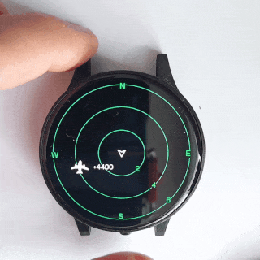
Traffic Info Screen
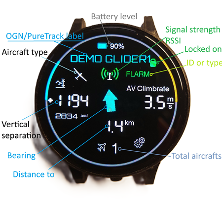
Features
Buddy List & Labels
Identify known pilots easily on the Radar Screen. Buddies are displayed with special indicators to help you quickly recognise friends and familiar aircraft.
- White blinking dot on buddy aircraft
- Initials displayed next to the aircraft symbol
- Circle (dot) icon marking buddy aircraft
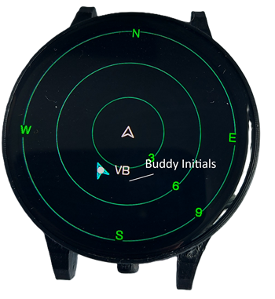
Buddy labels can be enabled or disabled from the on-screen Settings Page. See Managing Buddy List for instructions on adding buddies.
Vertical Separation Display
Relative altitude displayed directly on the Radar Screen for Gliders, Helicopters, and General Aviation.
Paraglider Color Coding
| Color | Meaning |
|---|---|
| Cyan | Aircraft is above you |
| Green | Aircraft is below you |
| Red | Aircraft at same height (±500 ft) |
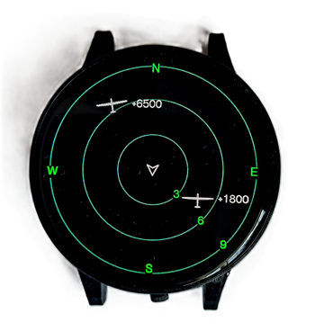
Proximity Alerting
Visual proximity warnings when aircraft are close both vertically and horizontally:
- Blinking circles around close aircraft
- Look-up direction line drawn from Radar center to the aircraft
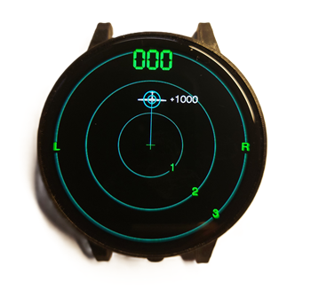
Tap on Target Aircraft
Interactive touch — tap any aircraft on the Radar to open its Info Card.
- Tap on aircraft in the Radar screen to open its Info Card.
- The Info Card becomes locked (green lock icon).
- Card stays visible as long as the aircraft is in view.
- Switch aircraft: Tap the green lock to unlock, then tap another aircraft.
- Return to Radar: Swipe left.
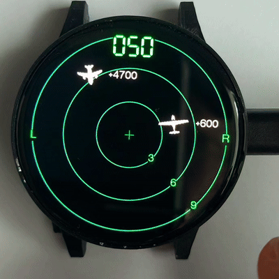
Lock Feature
- When green — Info page always shows this aircraft (if in range)
- When aircraft out of range — screen shows any other visible aircraft or "No Traffic"
- When aircraft returns — screen automatically switches back to the locked aircraft
- To change the locked aircraft — swipe up or down to move to the next aircraft
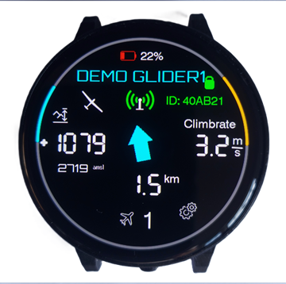
Battery Management
Smart Charging
- Slower charging rate to improve battery longevity
- Lower current near 100% for optimal energy absorption
- Charge icon shows charging status and full-charge state
Battery Status Icons
- SkyView battery indicator — internal battery level
- External BLE device battery — battery status of connected devices (e.g. SoftRF T1000-E)
Battery Logging
- Automatic log per discharge cycle
- Tracks duration from full to low
- Logs retrievable via web interface
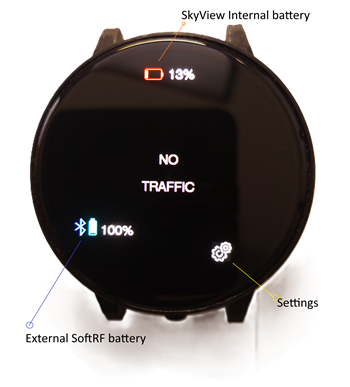
Device Controls
Mode/Power Button
| Action | Result |
|---|---|
| Short press | Cycle view: Radar → Traffic Info → Compass |
| Double press | Go to Settings page |
| Long press (2 s) | Power options menu (Sleep / Full Power Off) |
| Long press while off | Power on device |
Power Down Options
- Sleep Mode: Low-power sleep, wake with button press
- Storage Sleep: Deep sleep, requires USB power to wake
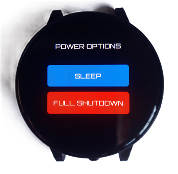
Compass Page
GPS-based compass displaying:
- Heading track
- Altitude
- Speed
- Number of GPS satellites received
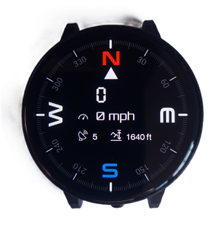
Bluetooth LE Management
SkyView connects only to paired BLE devices for security and reliability, preventing unwanted connections on busy takeoffs.
Pairing a Bluetooth Device
-
Connect to SkyView WiFi
Power on your SkyView. Connect your phone/computer to the SkyView WiFi access point (available for 10 minutes after boot).
Default WiFi Password:12345678 -
Access the Web Interface
Open your browser and navigate to http://192.168.1.1 -
Pair Your Device
Click BLE Manage → Scan for BLE devices. The scan shows only FLARM/FANET-capable devices. Click Add next to your SoftRF device. -
Managing Paired Devices
Remove previously paired devices on the same page. Only paired devices will auto-connect.
Benefits of Managed BLE
- Prevents random connections on crowded takeoffs
- NimBLE stack for improved power efficiency
- Scan shows only relevant devices
Web Interface
The SkyView web interface provides configuration, firmware updates, and file management.
Accessing the Web Interface
-
Connect to SkyView WiFi
SSID:SkyView-XXXXXX| Password:12345678
Available for 10 minutes after boot. -
Open your browser
Navigate to http://192.168.1.1
Managing Buddy List
Add pilot buddies for easy identification on the Radar screen. Each line in buddylist.txt contains: HEX_ID,Pilot Name
Edit Online
- Access the SkyView web interface
- Navigate to the Upload Files page
-
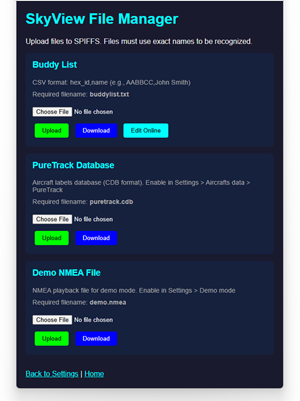
File Manager page - Under Buddy List, click Edit Online
- Add or remove buddies in the text area — labels appear on Radar immediately
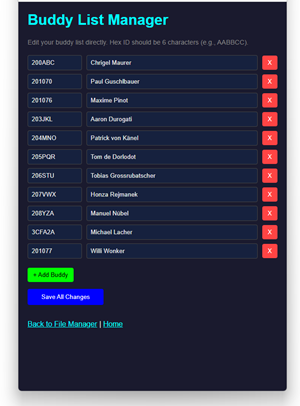
Download / Upload File
- Access the SkyView web interface
- Navigate to the file upload page
- Select your
buddylist.txtfile and click Upload - Buddy labels appear on the Radar screen
Example buddylist.txt
200ABC,Chrigel Maurer
1F00C1,Paul GuschlbauerFirmware Updates
-
Connect to SkyView WiFi and open http://192.168.1.1
-
Upload Firmware
Navigate to Update Firmware, select the.binfile, click Upload. Device restarts automatically.
Settings
Access on-device settings: from the Info page, tap the cogs icon to open Settings.
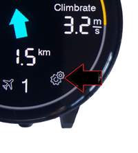
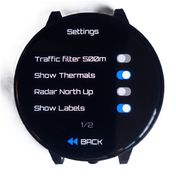
| Setting | Description |
|---|---|
| Traffic Filters | Filter aircraft types to display |
| Show Thermals | Show coloured dots when paraglider is climbing |
| Radar North Up | North-Up or Track-Up radar orientation |
| Show Labels | Enable/disable buddy initials on Radar page |
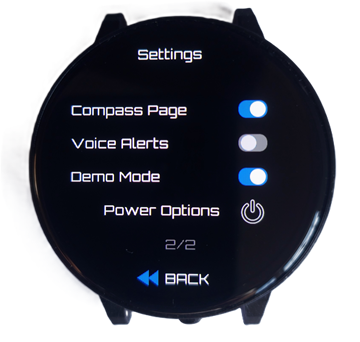
| Setting | Description |
|---|---|
| Compass Page | Enable/disable Compass screen in rotation |
| Voice Alerts | Enable/disable traffic announcements (audio-enabled devices) |
| Power Options | Opens the Power Options menu |
Troubleshooting
WiFi Access Point Not Available
- WiFi AP is only available for 10 minutes after power-on
- Restart device and connect within 10 minutes
- Default password:
12345678
Bluetooth Device Won't Connect
- Ensure device is paired via the BLE Manage page
- Only paired devices can connect
- Check that BLE device is powered on and in range
- Remove and re-add device if connection issues persist
No Traffic Displayed
- Verify BLE/Serial/WiFi connection to traffic source
- Check that traffic source is receiving data
- Ensure SkyView is configured for the correct protocol (NMEA/GDL90)
- Check connection status on web interface
Battery Not Charging
- Use an appropriate USB-C cable and charger
- Charging is deliberately slower for battery health
- Wait until green battery icon appears (full charge)
- Check battery logs via web interface if issues persist
Device Won't Power On
- Ensure long press (>2 seconds) on the power button
- Check battery charge level
- Try connecting to USB power
Screen Timeout
- Radar screen updates every 5 seconds
- Text view times out after 7 seconds
- Touch screen to wake display
- Adjust timeout in Settings page
Version History
VB006 (Latest)
- Revamped battery/power management using SY6970 chip
- NimBLE Bluetooth stack for reduced power consumption
- Tap on aircraft to see details and lock Info Card
- Battery charging improvements and logging
- External BLE device battery status display
VB005
- Managed BLE connections (paired devices only)
- Improved Mode/Power button (long press to power on/off)
- Enhanced power management
VB004
- Vertical separation display on Radar
- Color-coded altitude for paragliders
- Proximity alerting with visual indicators
- Improved graphics rendering and speed
- Blinking buddy indicators
VB003
- Buddy list and labels feature
- Web interface for buddy list upload
- Buddy identification on Radar screen
- Firmware update via web interface
Support & Resources
GitHub Repository
SkyView AMOLED GitHubFirmware Downloads
Latest Firmware BinariesVideo Tutorials
Firmware Update TutorialManual Version 1.0 · Based on firmware VB003–VB006 · Updated 2025